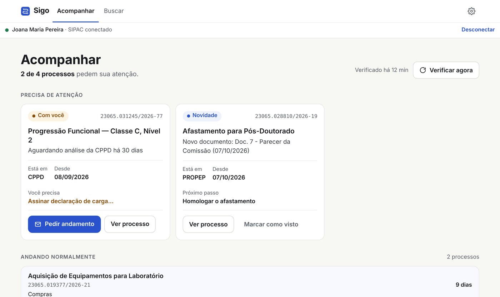
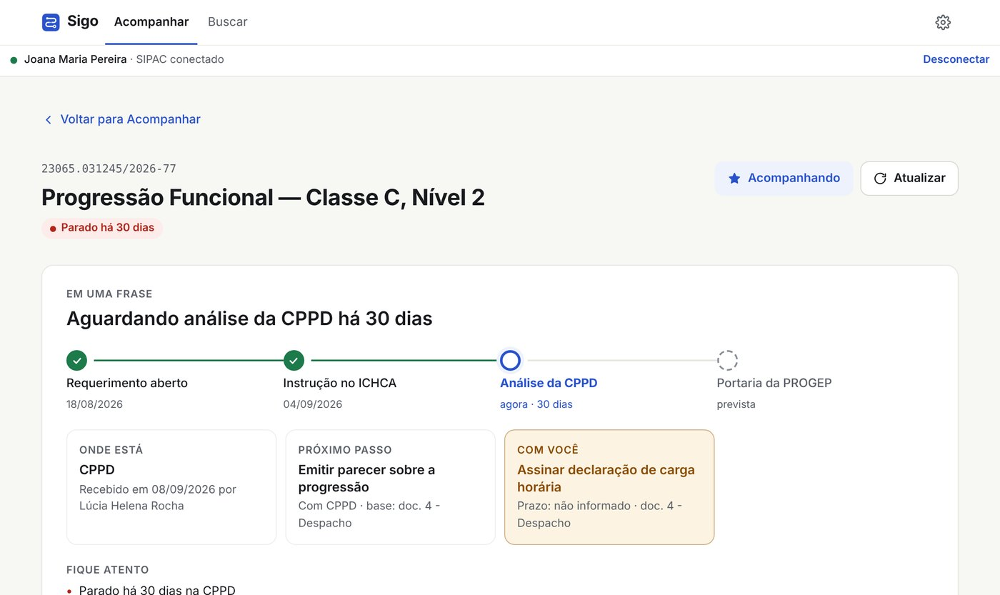
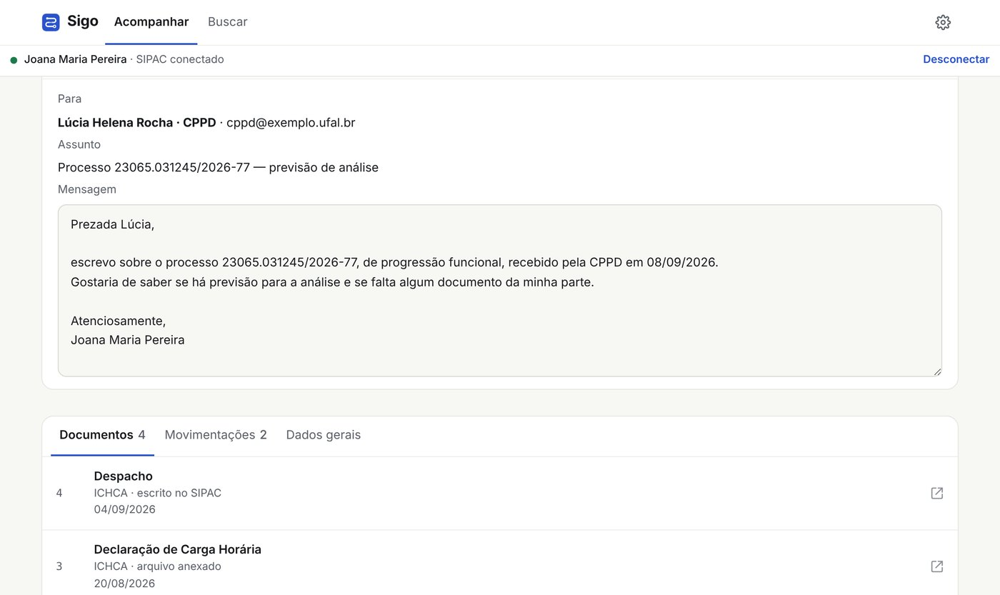
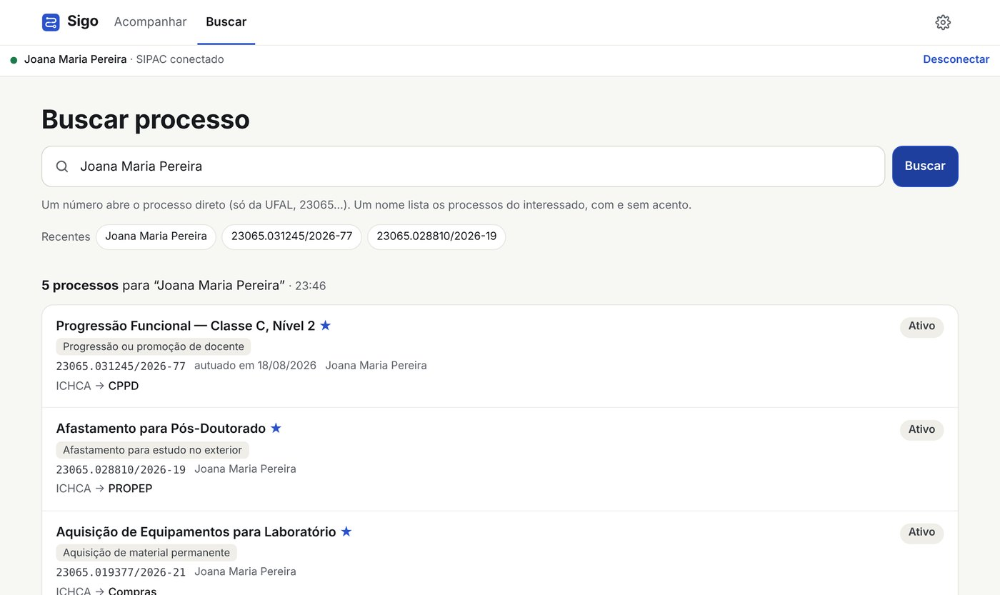

Seus processos do SIPAC, claros e em uma tela só.
O Sigo é uma extensão gratuita do Chrome. Ela mostra onde cada processo está, há quanto tempo está parado e o que mudou desde a última consulta. Além disso, com a IA opcional, resume o processo e indica o que depende de você.

O que o Sigo faz
O SIPAC reúne muita informação, mas encontrar um processo e entender em que pé ele está exige vários cliques. Por isso, o Sigo apresenta o essencial de forma direta.
Acompanhe sem abrir processo por processo
Marque os processos que importam. O Sigo confere cada um e destaca os parados, os que têm novidade e os que dependem de você.
Entenda o processo em uma frase
Com a IA ligada, o Sigo lê os últimos documentos e mostra a etapa atual, o próximo passo e o que depende de você, sempre citando o documento de origem.

Peça andamento com um clique
Quando o processo para, a IA sugere uma mensagem cordial para quem está com ele. Você revisa, copia ou abre direto no Gmail.

Busque pelo número ou pelo nome
Digite o número do processo ou o nome do interessado. O Sigo busca com e sem acento e mostra assunto, destino e situação de cada resultado.

Privacidade em primeiro lugar
O Sigo foi desenhado para não precisar dos seus dados.
Sem servidor
O Sigo roda só no seu navegador e não coleta dados. Favoritos, histórico e configurações ficam no seu computador.
Sem senha
Ele usa a sessão do SIPAC que você mesmo abriu no Chrome. Por isso, acessa apenas o que o seu login já permite.
IA sob o seu controle
A IA vem desligada e usa a sua própria chave do Gemini, do Claude ou do GPT. O conteúdo vai direto para o provedor que você escolher.
Proteção a sigilosos
Processos restritos, sigilosos ou sem natureza informada não vão para a IA, salvo se você liberar esse envio.
Instalar
O Sigo funciona no Google Chrome e, por enquanto, com o SIPAC da UFAL.
Chrome Web Store
Em breve. Quando a extensão for publicada, o link para instalar com um clique aparece aqui.
Pelo GitHub (avançado)
- Baixe o código em github.com/lagefreitas/sigo.
- Abra
chrome://extensionse ligue o Modo do desenvolvedor. - Clique em Carregar sem compactação e escolha a pasta
extensao.
Como usar
- Entre no SIPAC normalmente, numa aba do Chrome.
- Clique no ícone do Sigo.
- Digite o número do processo ou o nome do interessado.
O Sigo é uma ferramenta gratuita e independente, desenvolvida por André Lage Freitas. Ele não tem vínculo oficial com a UFAL, com a UFRN nem com os sistemas SIG. As telas desta página usam dados fictícios.